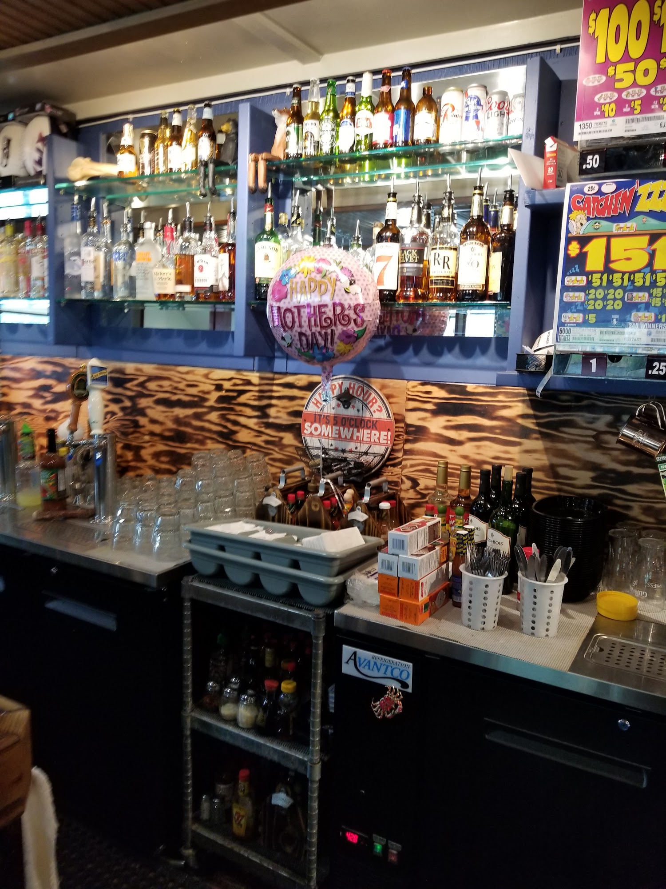

11 accepted actual-business candidates. Source IDs are preserved. Provisional hero: 08 desktop / 03 mobile. Eight distinct actual photos used on the page, plus the genuine logo. Excluded old Milton Tavern storefront, dated graphics, stock-like promo images, screenshots and collages. Current exterior remains unavailable.

01 lodge-01.jpg 1500 × 2000 Photo credit: google Back bar and wood counter